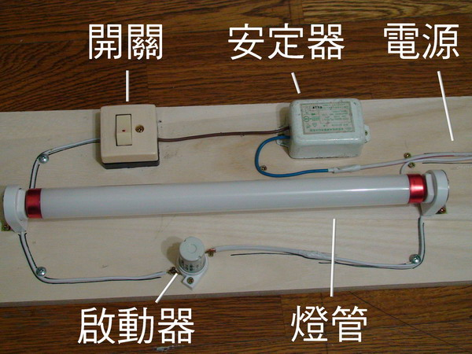
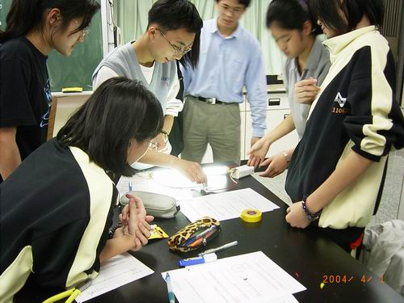
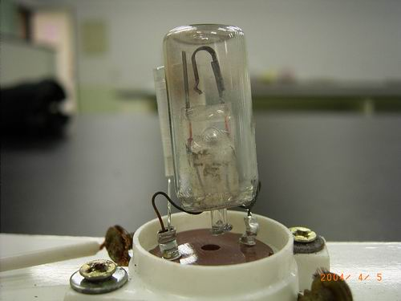
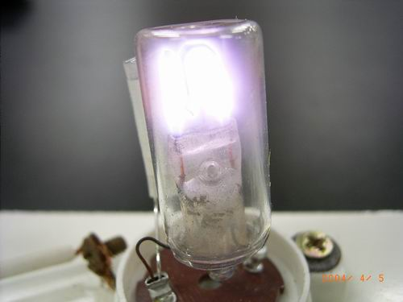
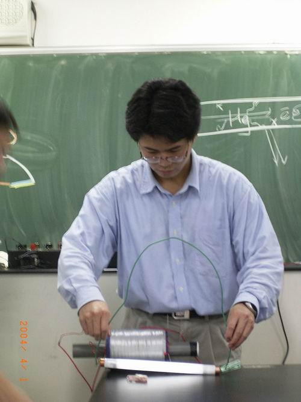
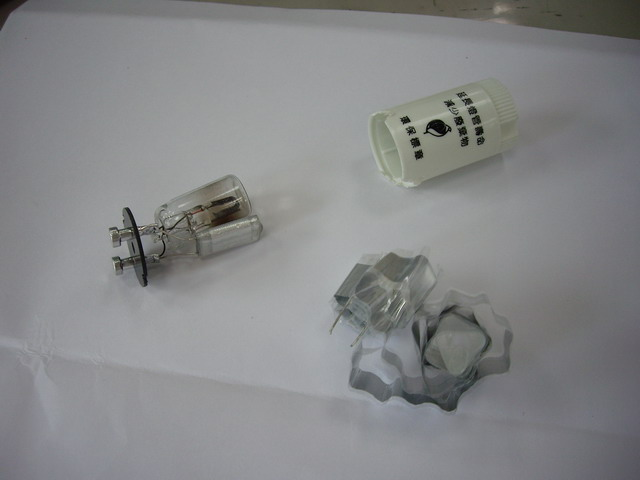

↑點亮日光燈的影片。

↑日光燈的接法：燈管與啟動器並聯，再與安定器串聯，打開開關，燈就亮喔！

↑自科社的學生將燈管點亮。

↑將日光燈啟動器外殼拆掉，看到裡面的構造，彎曲的金屬是雙金屬片。
未通電時，屬於斷路狀態。

↑通電時，啟動器裡的氣體通電而放出光線。
雙金屬片受熱而伸直，將使啟動器成為導通狀態。

↑沒有啟動器，只用一根導線，也能將日光燈點亮。
大約十年前還有這種桌燈，啟動時要按住按鈕不放，
讓燈管預熱後，在放開按鈕時點亮燈管。
---------------- 啟動器的電容 -------------

↑拆開啟動器旁的電容，發現電容其實是由兩片很長的金屬板捲起來的。
感謝師大附中 陳忠城 老師提供拆開的啟動器電容。